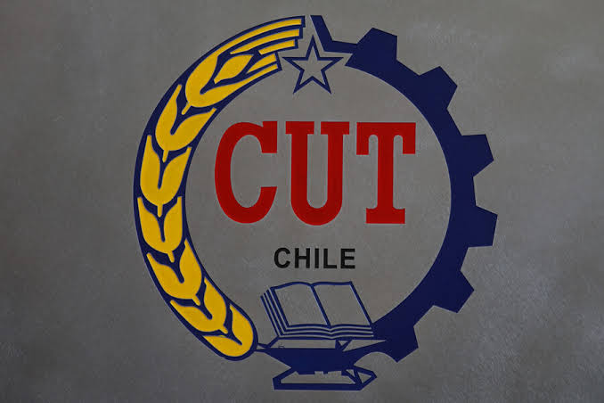

La huelga de los gerentes: el sindicalismo chileno y la trampa de la negociación
Mientras Kast avanza con su plan de expoliación, la CUT, el magisterio y los gremios de la salud centran su defensa en la presión parlamentaria y el "diálogo social". Sus dirigencias, atadas a los partidos de la oposición, han abandonado hasta ahora la única fuerza capaz de detener el plan: el movimiento social de masas.

I. Introducción: el gobierno avanza, los gremios negocian
El gobierno de José Antonio Kast ha desplegado su plan de expoliación con una velocidad que no tiene parangón en la historia reciente. La Megarreforma tributaria, los recortes sociales, la flexibilización laboral, el fortalecimiento del Estado policial. Cada semana que pasa, el plan avanza un poco más.
La oposición parlamentaria, como hemos analizado en el artículo La “dama de compañía” del capital: el papel de la oposición en el plan de Kast, se ha limitado a criticar en los medios mientras negocia indicaciones en el Senado. Es la "dama de compañía" del capital: acompaña, legitima, pero no frena.
Pero hay un actor que debería estar en primera línea de resistencia y no lo está: el movimiento sindical. La Central Unitaria de Trabajadores (CUT), el Colegio de Profesores, los gremios de la salud, los sindicatos de la minería del cobre. Todos ellos, con distintos énfasis y retóricas, están centrando la defensa de sus derechos en la presión parlamentaria y el "diálogo social", no en la movilización de masas.
Eso no es un detalle menor. Es una orientación política que, como veremos, golpeará y destruirá aún más a los gremios, y que se presta a la maniobra de reconstitución político electoral de la oposición que perdió el gobierno ante Kast.
II. La CUT: el "diálogo social" como estrategia
La CUT nació como una coordinadora de las luchas sindicales, un espacio de convergencia del movimiento obrero. Hoy es un interlocutor más en la mesa de negociación parlamentaria. Se reúne con los partidos, negocia indicaciones, pide audiencias. Pero no convoca a sus bases a la movilización. Es probable que en realidad no tenga esa capacidad.
Eso la convierte en parte del engranaje institucional, no en una fuerza de confrontación. Y esa es una elección política, no una fatalidad. La CUT podría convocar a un paro nacional, podría coordinar a los gremios en una acción común, podría poner a sus bases en la calle. No lo hace porque su dirección ha optado por la vía parlamentaria.
Y esa opción, como hemos visto, no detiene la expoliación; la administra. Mientras la CUT negocia, Kast avanza.
El pliego de reajuste y la ilusión del 2% real
La CUT presentó su pliego de reajuste al sector público y pidió un alza de 6,3% nominal, con la esperanza de un aumento real "no inferior al 2%". Su secretario general, Eric Campos, reconoció que enfrentan "al gobierno que más ha sido claro en mostrar un certero desprecio por el Estado". Pero, aun así, la estrategia es el "diálogo social". La vicepresidenta Silvia Silva lo dijo: "Vamos a colocar nuestra mejor herramienta, que es el diálogo social, para negociar".
La movilización aparece solo como posibilidad futura: "si encontramos resistencia y no hay diálogo". Es decir, la huelga es el plan B, no el plan A.
Y hay un dato que la CUT no menciona en su pliego: el "bencinazo" de marzo de 2026, que significó alzas de hasta $392 por litro en las gasolinas y $580 en el diésel, empujó la inflación y golpeó directamente el poder adquisitivo de los trabajadores. La propia CUT proyecta una inflación de 4,3% para el año. El 2% real que piden es insuficiente para recuperar lo perdido. La negociación se libra en un terreno donde la inflación ya carcomió el salario antes de empezar.
La primera acción: pedir audiencia
La primera acción de la CUT frente al gobierno de Kast no fue convocar a paro, ni llamar a movilización. Fue enviar una carta al presidente solicitando audiencia y "establecer las relaciones institucionales de contraparte".
Es decir: la CUT, ante el gobierno que dice despreciar, pide una reunión. No convoca a sus bases. No pone a los trabajadores en la calle. Se sienta a la mesa.
La dirección partidaria: PC y PS en la conducción
La composición de la dirección de la CUT no es un detalle menor. Explica por qué la estrategia es el "diálogo social". Eric Campos (Secretario General): Militante del Partido Comunista desde hace 27 años e integrante de su comisión política. Silvia Silva (Vicepresidenta de Finanzas): Militante del Partido Socialista. Se integró al comando de la pre candidata presidencial del PS, Carolina Tohá, y justificó su apoyo en "fortalecer el diálogo social". José Manuel Díaz (Presidente): Dirigente de militancia Socialista.
Esta composición no es casual. La dirección sindical comparte el proyecto político de la oposición parlamentaria. Y su estrategia —el diálogo social, la presión parlamentaria— coincide objetivamente con la de los partidos que hoy buscan reconstituirse como "alternativa" sin haber movilizado a las bases que dicen representar.
III. El Colegio de Profesores: de la huelga de 2019 a la "marcha familiar" de 2026
La gloria de 2019
Durante la conducción gremial de Mario Aguilar, el magisterio protagonizó una de las movilizaciones más importantes de las últimas décadas: el paro nacional de 2019 contra el gobierno de Piñera.
- Duración: 51 días entre junio y julio.
- Demandas: pago de la "mención" a educadoras de párvulos y diferenciales, fin a la reforma curricular que dejaba Historia y Educación Física como ramos optativos, mejoras en la crisis de la educación pública.
- Hitos: marchas masivas que superaron los 90 mil asistentes, cacerolazos, una inédita "Caminata por la Educación" desde Santiago a Valparaíso.
El paro terminó tras una consulta nacional donde las bases decidieron deponer las movilizaciones, a pesar de no conseguir el 100% de los puntos demandados. Fue una derrota parcial, pero una demostración de fuerza real.
El giro "negociador" de 2026
Hoy, ante el gobierno de Kast, la respuesta es muy distinta. El Colegio de Profesores acusa un recorte encubierto en la partida de Educación para el Presupuesto 2027. Sus demandas son legítimas: defensa del Fondo de Apoyo a la Educación Pública (FAEP), solución a las deudas previsionales municipales, mayor seguridad en los establecimientos.
Pero las acciones son otras: Una "marcha familiar" para el sábado 14 de noviembre. No un paro. No una huelga indefinida. Una marcha familiar un sábado. Un "plan de acción" para influir en el Presupuesto: "nuestras directivas en los territorios van a hacer gestiones con todos los parlamentarios de su zona para hacerles tomar conciencia del impacto negativo".
Contacto directo de las bases con los parlamentarios vía WhatsApp o correo electrónico. "Estamos haciendo una legítima presión ciudadana a los que tienen que tomar decisiones, que en este caso son los parlamentarios", dijo Aguilar.
Es decir: la estrategia es presionar a los parlamentarios, no movilizar a las bases. El fracaso de 2019 (no conseguir el 100% de las demandas) parece haber inclinado la balanza definitivamente hacia la negociación y la presión parlamentaria, abandonando la movilización de masas como herramienta principal.
Y hay un dato adicional: la conducción de Aguilar es cuestionada desde dentro. Un artículo de Resumen.cl denuncia una "persecución política" contra disidencias internas, y acusa a Aguilar de haber "eliminado el principio de un profesor, un voto en una consulta nacional" y de haber sacado del petitorio la demanda del pago de la "mención" para profesoras diferenciales y de párvulos. El giro "negociador" no es solo una respuesta a la derrota de 2019, sino también una estrategia de control de una dirección que ha burocratizado el gremio y que teme a las bases. Y claramente parte de la táctica electoral que realiza la oposición.
IV. Los gremios de la salud: la desconexión con los sectores populares
La crítica feroz de "la gente de la calle"
Los gremios de la salud pública han expresado su rechazo a los recortes presupuestarios y al proyecto de licencias médicas. Pero su acción principal es ir al Congreso: se reúnen con parlamentarios, incluido el PDG (el partido que le da los votos a Kast), y plantean su preocupación.
Mientras tanto, la gente de la calle los critica ferozmente. En el conflicto del Hospital El Carmen (enero de 2026), tras un paro de médicos, organizaciones sociales y usuarios anunciaron acciones legales ante la Contraloría, calificando la movilización como una "vulneración violenta y arbitraria" del derecho a la salud. Denunciaron esperas de más de 13 horas y exigieron la devolución de las atenciones no realizadas.
Una nota de Factos.cl resume la lógica: "los gremios pueden declarar victorias corporativas mientras los usuarios soportan derrotas asistenciales". El Colegio Médico celebraba un acuerdo que solo prorrogaba contratos, mientras los pacientes quedaban fuera de la mesa.
Esto confirma la tesis: la lucha gremial por la salud pública, absolutamente legítima y necesaria en sus demandas, es percibida por los sectores populares como ajena a sus intereses inmediatos. Los gremios de la salud negocian sus condiciones laborales y de aseguramiento de un servicio vital para la población, mientras los usuarios que sufren las consecuencias de un sistema deteriorado, no comprenden y no apoyan en general, las demandas gremiales. En este sentido sus dirigencias han sido incapaces de lograr la conexión vital y necesaria para recibir el apoyo de los usuarios para su lucha.
La importancia estratégica del sector
A pesar de esta desconexión, el gremio de la salud sigue siendo un actor clave. Fenats, Confusam y el Colegio Médico agrupan a miles de trabajadores y son un actor fundamental en la provisión de los servicios que viene recortando el gobierno ultraderechista. Su burocratización y su lógica de "victoria corporativa" los debilitan, pero su potencial de movilización sigue ahí, desperdiciado por una conducción que prioriza la mesa de negociación (o la foto del acuerdo) por sobre la coordinación con las bases sociales y políticas y los usuarios.
V. La minería del cobre: la aristocracia obrera defiende su pedazo del pastel
Los conflictos en Centinela y Escondida son el ejemplo perfecto de lo que estamos aseverando. Los trabajadores de la minería del cobre han protagonizado huelgas y negociaciones colectivas por salarios, bonos y condiciones laborales. Son demandas legítimas, pero economicistas: no cuestionan el modelo, no enfrentan al gobierno, no se suman a la lucha general contra la expoliación, ni en la defensa del cobre, y sus implicancias en la economía chilena.
Es la aristocracia obrera defendiendo su pedazo del pastel. Y eso no es un insulto: es una caracterización política. Los mineros del cobre son un sector privilegiado dentro del proletariado chileno, con salarios muy por encima del promedio y capacidad de negociación colectiva. Su lucha es defensiva y corporativa. No es la lucha del conjunto de la clase trabajadora.
Mientras los mineros negocian sus bonos, los trabajadores de la salud ven recortados sus presupuestos, los profesores enfrentan condiciones cada vez más precarias, y los trabajadores de plataformas y del retail siguen sin organización sindical. La fragmentación del movimiento sindical es funcional al plan de Kast.
VI. La CUT y la reconstitución de la oposición
Hay un aspecto que no puede pasarse por alto: la reunión de la CUT con los secretarios generales de la oposición (PS, FA, PC, PPD) no es casual. Es parte de la maniobra de reconstitución de la oposición política que perdió el gobierno ante Kast.
Los partidos de la oposición necesitan reconstruir su vínculo con el movimiento social para presentarse como "la alternativa" en las próximas elecciones. Y la CUT, al sentarse con ellos a "diseñar estrategia", se presta a esa maniobra.
No se trata de que la CUT sea "traidora" o "vendida". Se trata de que su orientación política —la presión parlamentaria— coincide objetivamente con la estrategia de la oposición institucional. Y esa coincidencia debilita al movimiento sindical, porque lo subordina a la lógica electoral de partidos que no tienen interés en una movilización de masas que podría desbordarlos.
VII. La única fuerza capaz de detener el plan: el movimiento social de masas
La conclusión es clara. La única fuerza capaz de detener la expoliación de Kast es el movimiento social de masas. No la presión parlamentaria, no las declaraciones, no las reuniones de mesa. La calle. La movilización. La coordinación de los sectores golpeados.
Y mientras los gremios sigan centrando su defensa en el Parlamento, no solo no detendrán el plan, sino que se debilitarán aún más. La historia lo demuestra: cada vez que el movimiento sindical ha apostado por la vía institucional, ha terminado más débil, más dividido y más desprestigiado.
La tarea es romper con la lógica parlamentaria y reconstruir la capacidad de movilización autónoma. Coordinar a los gremios en una acción común. Convocar a un paro nacional. Poner a las bases en la calle. Esa es la única fuerza que puede detener a Kast.
Y esa fuerza no se construye en las reuniones con los secretarios generales de la oposición. Se construye en los lugares de trabajo, en los territorios, en las asambleas de base. Ahí está el futuro del movimiento sindical. No en el Congreso.
VIII. Conclusión: la huelga de los gerentes
El sindicalismo chileno, en su conducción actual, se ha convertido en una huelga de gerentes. Negocia, presiona, declara. Pero no moviliza. Sus dirigencias, atadas a los partidos de la oposición, han optado por la vía institucional, y esa vía no detiene la expoliación: la administra.
No ocuparemos mucho espacio aquí para referirnos al Sindicalismo Clasista, con su independencia de los partidos de la oposición, su orientación a la organización de base, su rechazo a la negociación institucional como estrategia principal, han estado en todas las movilizaciones. No representan un número importante de trabajadores aún, ni han logrado avanzar en la política de un “nuevo sindicalismo”, de la forma que se pretendía, pero están organizando sectores de trabajadores del mundo privado, muy distintos a los grandes gremios. Y están en la pelea.
Ahora, en nuestra opinión, y con este contexto, la tarea de una izquierda consecuente no es pedirle a la CUT que negocie mejor. Es construir la fuerza social que la CUT no está construyendo. Coordinar a los sectores golpeados, articular las luchas sectoriales, poner a las bases en el centro. Llenar los vacíos que tiene la política sindical burocrática, sumarnos crítica y autónomamente, desplegar esa crítica en la calle, en las marchas, hacerla llegar a las bases sindicales, presionar sus dirigencias. Tomar las demandas que ellos abandonan.
Tal como lo planteamos en el artículo “Ante las próximas movilizaciones sociales: táctica sindical, movimientos populares y el camino al Paro Nacional”, esta última bien podría ser una tarea táctica del sindicalismo clasista. Pero también de orgánicas que cuenten con vínculos sindicales. La táctica de reunirse con ellos y presionar, o en buen chileno “que no se la lleven pela”.
Solo así, creemos, podríamos tener alguna oportunidad de detener el plan de Kast. El plan de la Burguesía subordinada, en representación del gran capital. Y por otro avanzar en un proceso de construcción social de largo aliento.